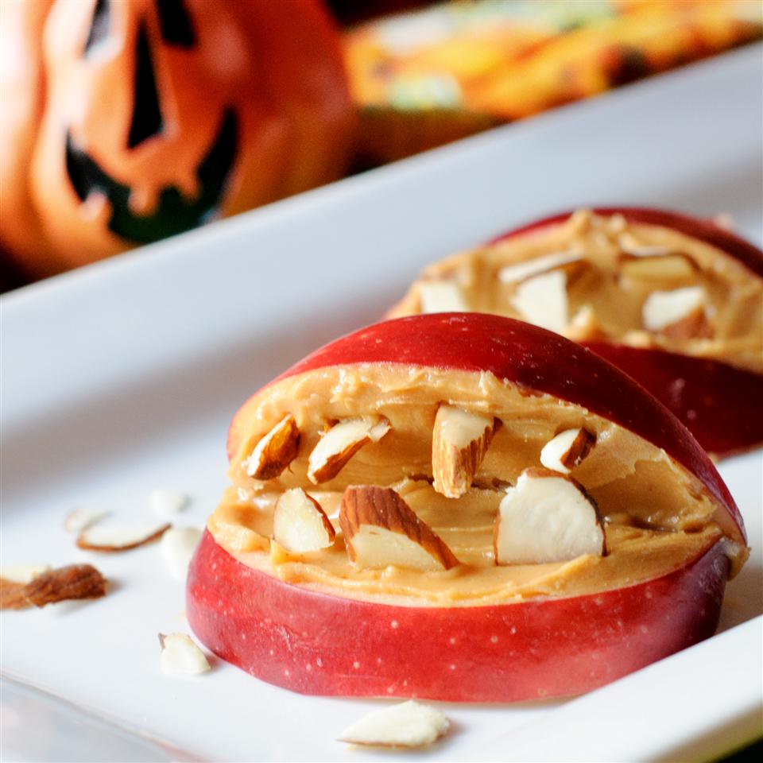

Monster Bites
Description
This is a small description of the monster bites
They are just delicious and need few materials
Ingredients
4 apples cored and cut into 8 pieces
Steps
Slice each wedge of apple in half the long way, making two smaller wedges. Spread about 3/4 teaspoon of peanut butter on one cut side of a small wedge, and place 5 or 6 pieces of candy corn sticking out of the peanut butter for teeth. Spread 3/4 teaspoon of peanut butter onto the cut side of second small wedge. Lightly press second wedge to the tops of the candy corn teeth, with the peanut butter to the inside, to form lips. Repeat with remaining apples, peanut butter, and candy corn.
Enjoy